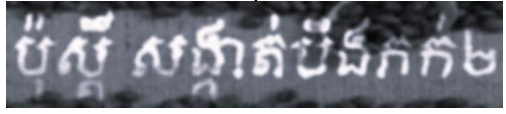

ប៉ុស្តិ៍សង្កាត់បឹងកក់២
…
Predicted Characters
Ŷi ∈ ℝC
Z
TRDEC
Transformer Decoder Units
…
Contextual Features
Ti ∈ ℝD
TRENC
Transformer Encoder Units
…
Patched Features
Pi ∈ ℝD
PATCHENC
Patching Module
H'
W'
2D Feature Maps
Fi,j ∈ ℝD
CNN
H

WFigure 12I
Output — Predicted Characters
The decoder outputs a probability distribution over C = 131 character classes at each step. The most likely character is selected autoregressively until the [EOS] token is produced.
TRDEC — Transformer Decoder Units
- Takes contextual features T and context sequence Z = (SOS, y₁,…,yL)
- Uses static position encoding for variable-length output
- Autoregressive: predicts one character at a time, attending to all previous outputs
- Equation: Ŷ = TRDEC(T, Z) | Loss: CE(Ŷ, Y)
TRENC — Transformer Encoder Units
- Receives patched features P = (P₁,…,PW'/k₁k₂)
- Applies standard multi-head self-attention across all patches
- Produces contextual features T capturing spatial relationships
- Equation: T = TRENC(P)
PATCHENC — Patching Module
- Splits 2D feature map F into non-overlapping patches of size (k₁, k₂)
- Each patch is linearly projected + position encoded → vector in ℝD
- Equation: P = PATCHENC(k₁,k₂)(F)
- Asymmetric patches used: (2,1), (3,1), (4,1)
CNN — Feature Extractor
- Takes grayscale image I of shape H × W
- Outputs 2D feature maps F of shape H' × W' × D
- For 2D: H' = H/4, W' = W/4 (last MaxPool layers removed)
- Equation: F = CNN(I)
- Backbones: modified VGG or modified ResNet
Complete Data Flow
I
→ CNN →
Fi,j
→ PATCHENC →
Pi
Pi → TRENC → Ti → TRDEC(T,Z) → Ŷi
Pi → TRENC → Ti → TRDEC(T,Z) → Ŷi